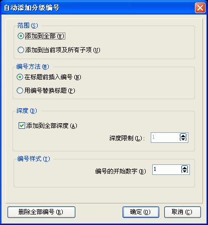

当新建或打开一个工程后，您可以通过用鼠标点击任意的目录项，然后在目录编辑区的右键弹出菜单里选取"自动添加分级编号..."将看到这个对话框。关于这个对话框的使用请看下面的具体描述.

编号方法 / 在标题前插入编号:
在标题前插入编号.
编号方法 / 用编号替换标题:
用编号替换标题。
深度 / 添加到全部深度:
添加到全部深度 -
目录编辑区的目录有多层就添加到多少层。
深度 / 深度限制:
添加到指定的深度。
编号样式 / 编号的开始数字:
编号的开始数字。
按钮 / 删除全部编号:
删除全部已经添加的编号。
| 版权所有 © 2000-2007 国华软件 保留全部权利. |